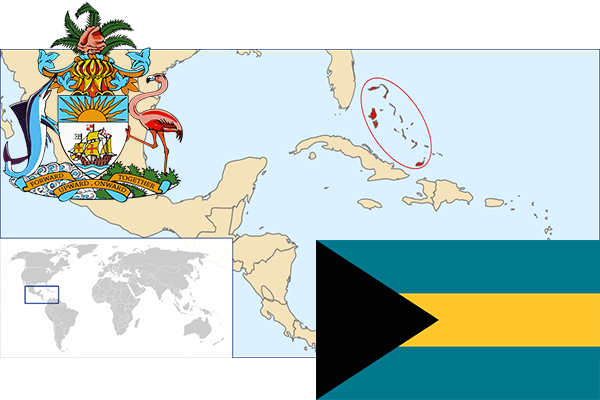

To`liq nomi: Bagami hamdo`stligi
Region: Markaziy Amerikaning shimoliy-sharqiy qismi
Qonunchilik shakli: Konstitutsion monarxiya
Mustaqillik kuni: 10-iyul 1973-yil Birlashgan qirollikdan
Poytaxti: Nassau
Maydoni: 13878 km² (dunyoda 177 -o`rinda )
Chegaradosh davlatlari: yo`q
Aholisi: 321,834 (dunyoda 177 -o`rinda ) 2014 -yil roʻyxat
Aholi zichligi: 23,27/km²
Aholining o`rtacha yoshi: 65,7 yil ( 69,0 ayollar, 62,4 erkaklar)
Rasmiy tili: ingliz tili
Dini: xristian
Pul birligi: Bagam dollari
Telefon prefiksi: +1-242
Internet domen: .bs
Xalqaro tashkilotlarga a`zoligi: BMT (1973 -yildan)
Dengiz va okeanlarga chiqishi: Karib dengizi
YIM: Butun: $ 11,055 mlrd, Jon boshiga: $ 22,832 (2015 - yil roʻyxati)
Yirik shaharlari: Nassau